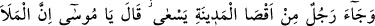
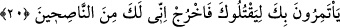
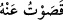
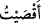
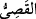
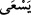
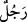
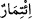
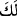
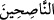
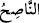
zulmeden kimse demektir.
Bu sözler, şehirde yayıldı ve Firavun ve adamlarının kulağına kadar ulaştı. Ve böylece
dünkü öldürme hadisesinin Mûsâ tarafından işlenmiş olduğu ortaya çıkmış oldu.
Halbuki bu olayı o İsrailliden başkası görmemişti. Bunun üzerine Firavun ve adamları
Mûsâ’yı öldürmeye karar verdiler. Firavun’un yakınlarından bir mü’min -ki o,
Mûsâ’nın amcasının oğludur- bu kararı Mûsâ’ya haber vermek için harekete geçti.
20. Şehrin öbür ucundan bir adam koşarak geldi: Ey Mûsâ! İleri gelenler seni
öldürmek için hakkında müzâkere ediyorlar. Derhal (buradan) çık! İnan ki ben
senin iyiliğini isteyenlerdenim, dedi.
“Şehrin öbür ucundan” ya da ön mahallerine yakın yerden “bir adam” yâni
Mûsâ’nın amcaoğlu olan Hırbîl “koşarak geldi:”
“
” ve “
” ifâdeleri, “Ben ondan uzaklaştım”; “uzaklaştım” anlamlarına
gelir. “
” kelimesi ise “uzak” mânâsına gelir. “
” ifâdesi, “
” kelimesinin sıfat
cümlesidir. Yâni koşarak hızlı hızlı yürüyordu ve nihâyet Mûsâ (a.s.)’ın yanına ulaştı
ve:
“Ey Mûsâ! İleri gelenler seni öldürmek için müzâkere ediyorlar.”
Ey Mûsâ, Firavun’un ileri gelenleri, senin için toplantı yapıyorlar ve senin durumunu
istişâre ediyorlar…
“Müşâvere” kavramı, “
” kelimesi ile ifâde edilmiştir; çünkü istişâre edenlerden
her biri diğerine emreder ve o da bu emri kabullenir. (Yâni fiilde mutâvaat mânâsı
vardır.)
“Derhal (buradan) çık! İnan ki ben senin iyiliğini isteyenlerdenim, dedi.”
Ben sana nasihat edenlerdenim; yâni iyiliksever ve merhametlilerdenim. Şehirden çık;
zira böyle yapman senin menfaatin îcâbıdır.
“ ” kelimesinin başındaki harf-i cer, beyan içindir. Sanki şöyle denilmiştir: “Bu
nasihati senin için söylüyorum.” Yoksa “
” kelimesinin sılası değildir. Zira sılanın
mâmülü, mevsûlün (ki bu “
” kelimesindeki elif-lâm takısıdır) önüne geçemez.